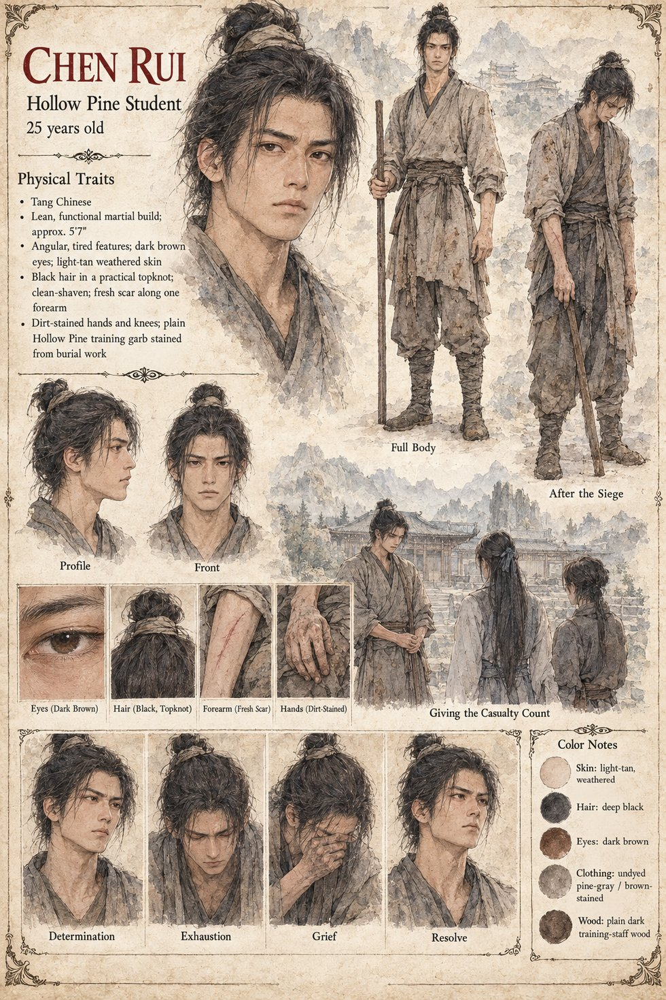

Chen Rui
Hollow Pine student · one of the three who stayed · 25 by his sheet
One of three students, with Old Fen and Bo, who stay at the mountain school after the six hundred have gone, rather than scatter with everyone else who could, to bury what the soldiers left behind. When Shen Lie and Bai Rong come down the mountain three days after the recall, they find swept courtyards and a gate repaired badly but repaired.
When Bai Rong asks how many died in all, not Wei Bo alone but the soldiers and the bystanders and everyone the valley will give up trying to count, it is Chen Rui who gives him the roughest figure available, and Bai Rong says nothing more that day. The sheet draws him lean and tired, with a fresh scar along one forearm, dirt-stained hands and knees and training garb stained from burial work, giving the casualty count; its age and build are its own.